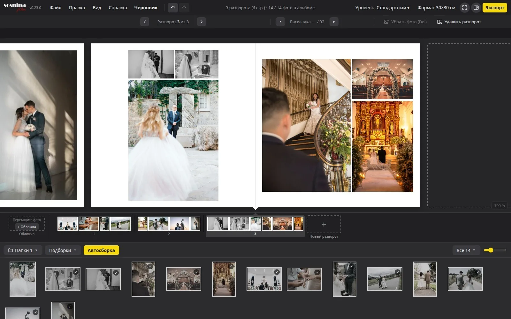

Приложение · Windows, macOS, Linux
Sosnina Albums
Вёрстка свадебных фотоальбомов. Выбрать папки с фото, собрать развороты автоматически или перетащить кадры руками, перебрать варианты раскладки и выгрузить развороты в JPEG 300 dpi для типографии.
Раскладки считаются точно, а фото не обрезаются без вашего согласия: рамка держит пропорции кадра, пока вы сами не выберете навылет (обрезает до 30 %), подгонку под лист (до 15 %) или свой кроп. Поля и зазоры задаются в миллиметрах.
Сделано вместе с фотографом Мариной Сосниной и используется в её работе. Версия 0.35.0, разработка идёт.
- Go 1.26
- Wails v2
- Svelte 5
- TypeScript
- GPL-3.0
